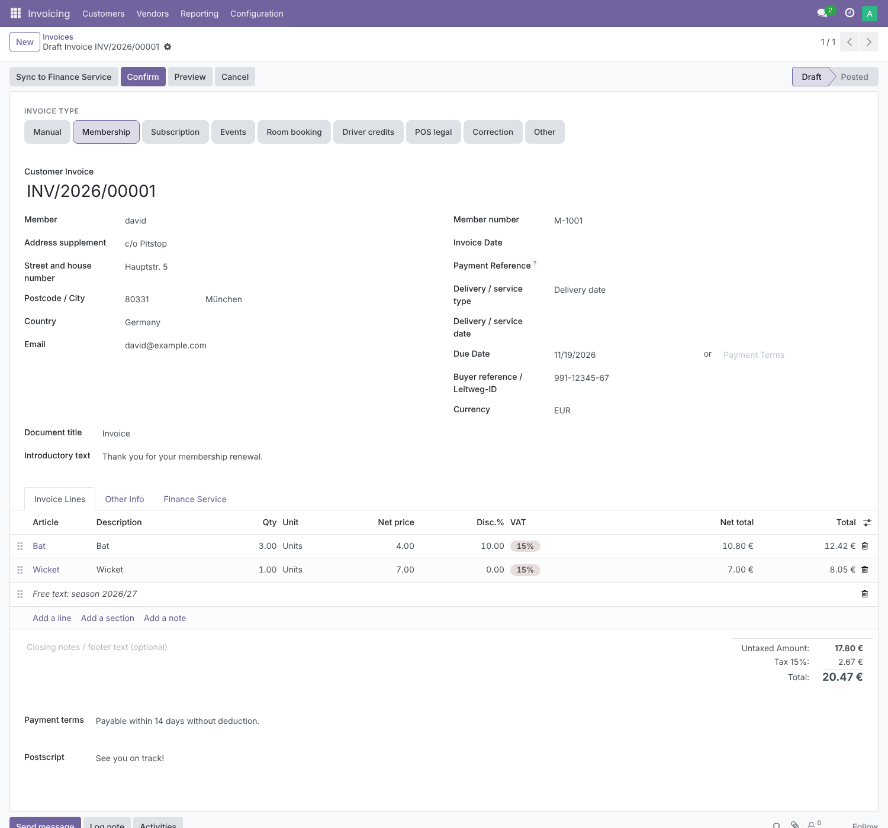

http://host.docker.internal:3000), the Tenant ID and the tenant's API Key.The module calls these endpoints of the Finance Service (all with the x-api-key header):
GET /api/v1/tenants/me — test connectionPOST /api/v1/tenants/{tenantId}/invoices — create invoicePATCH /api/v1/tenants/{tenantId}/invoices/{id} — update invoicePOST /api/v1/tenants/{tenantId}/invoices/{id}/mark-paid — payment write-back